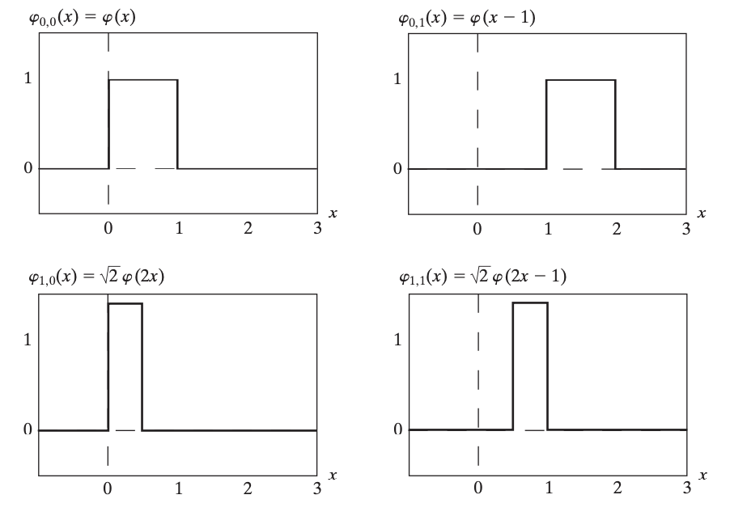
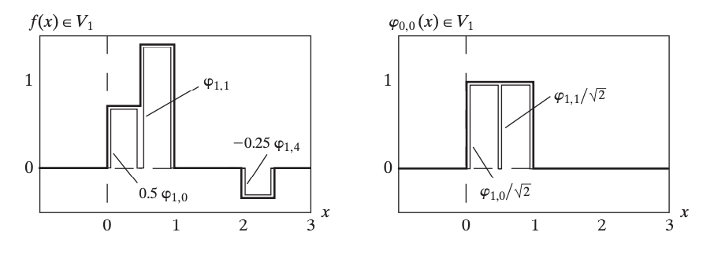
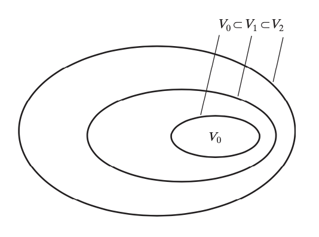
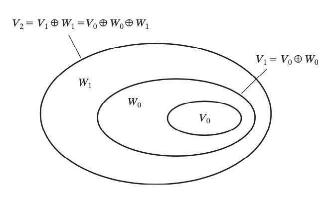
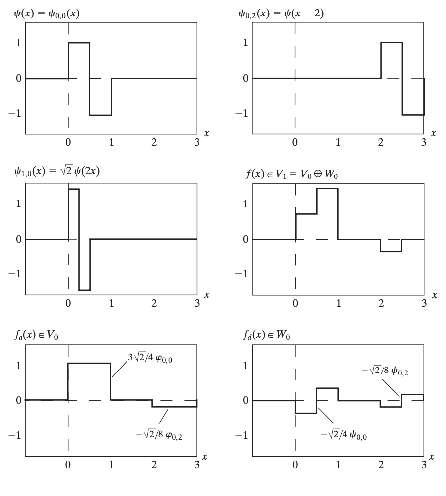
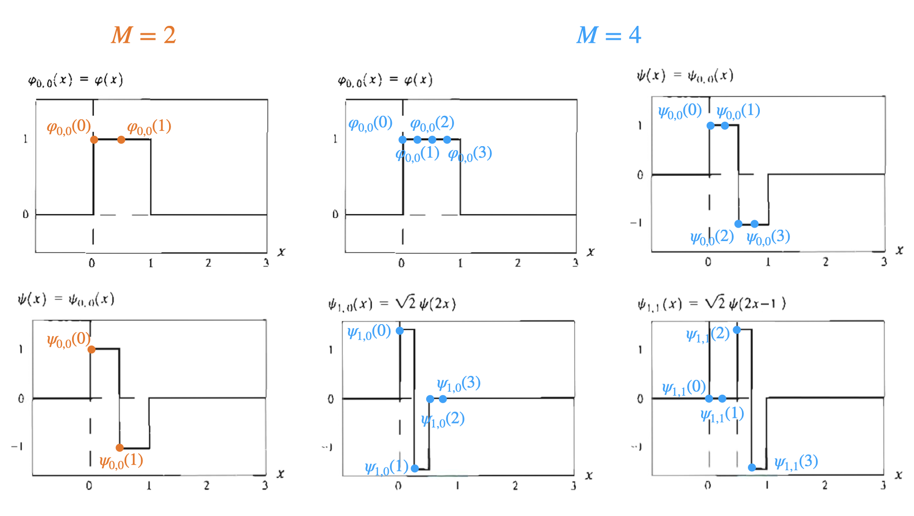
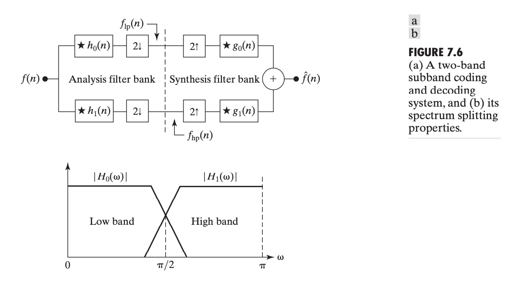
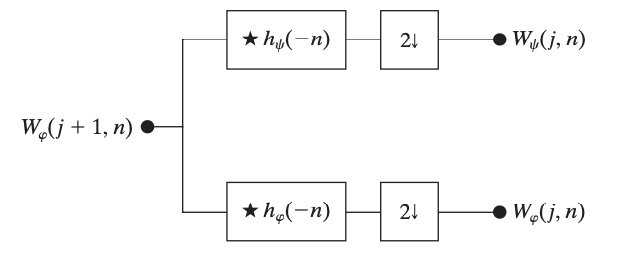
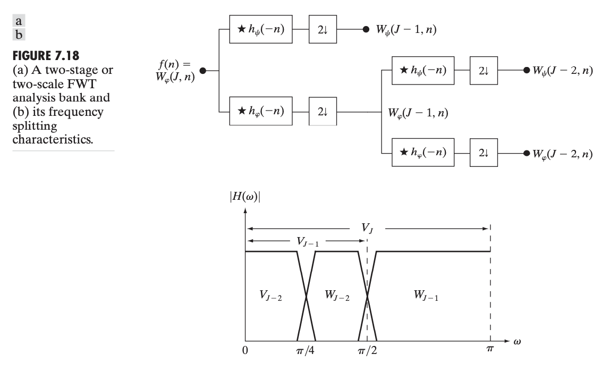

Wavelet Transform
尺度函数
给定一个平方可积的实值函数 \(\varphi(x)\)，考虑如下函数集合 \(\{\varphi_{j,k}(x)\}\)： \[ \varphi_{j,k}(x)=2^{j/2}\varphi(2^jx-k) \] 其中 \(k\in\mathbb Z\) 表示平移量，决定函数的位置；\(j\in\mathbb Z\) 指示沿 \(x\) 轴的伸缩量，决定函数的宽度；另外，系数 \(2^{j/2}\) 控制函数的高度。由于 \(\varphi_{j,k}(x)\) 的形状由 \(j\) 控制，因此我们称 \(\varphi(x)\) 为尺度函数。
举个例子，Haar 尺度函数定义为： \[ \varphi(x)=\begin{cases}1&0\leq x<1\\0&\text{otherwise}\end{cases} \] 下图可视化了 Haar 尺度函数及其平移伸缩后的图像：

当我们固定 \(j=j_0\) 后，改变 \(k\)，就得到尺度函数的一系列间隔整数单位的平移副本，它们可以作为一组基张成一个函数空间： \[ V_{j_0}=\overline{\text{Span}\{\varphi_{j_0,k}(x)\}} \] 因此，若 \(f(x)\in V_{j_0}\)，则它能表示这组基的线性组合： \[ f(x)=\sum_{k}\alpha_k\varphi_{j_0,k}(x) \] 例如，对于Haar 尺度函数，当 \(j=0\) 时，可以想像所有的 \(\{\varphi_{0,k}(x)\}\) 正好一个挨着一个铺满了 \(x\) 轴。那么，只要一个函数 \(f(x)\) 的“分辨率”不是太高，也即它在一个整数单位区间内不改变，那么就能表示为 \(\{\varphi_{0,k}(x)\}\) 的线性组合。类似地，当 \(j=1\) 时，\(\{\varphi_{1,k}(x)\}\) 的“分辨率”更高了，只要 \(f(x)\) 在半个整数单位区间内不改变，就可以表示为 \(\{\varphi_{1,k}(x)\}\) 的线性组合。以此类推，随着 \(j\) 增大，基函数 \(\{\varphi_{j,k}(x)\}\) 的“分辨率”越来越高，能表示的 \(f(x)\) 也就越来越精细。这就是多分辨率分析的意思。如下左图展示了一个可以表示为 \(\varphi_{1,0}(x),\varphi_{1,1}(x),\varphi_{1,4}(x)\) 的线性组合的 \(f(x)\)；右图则表明 \(\varphi_{0,0}(x)\) 可以表示为 \(\varphi_{1,0}(x)\) 和 \(\varphi_{1,1}(x)\) 的线性组合。

不过，为了多分辨率分析能够正常地进行下去，我们对尺度函数 \(\varphi(x)\) 提出一些要求：
尺度函数与其间隔整数的平移副本之间是正交的。正交即内积为零，函数空间中内积的定义为：
\[ \langle f(x),g(x)\rangle=\int f^\ast(x)g(x)\mathrm dx \] 因此，我们要求： \[ \langle \varphi_{j,k_1}(x),\varphi_{j,k_2}(x)\rangle=\int \varphi_{j,k_1}^\ast(x)\varphi_{j,k_2}(x)\mathrm dx=2^j\int\varphi^\ast(2^jx-k_1)\varphi(2^jx-k_2)\mathrm dx=0 \]
低分辨率尺度函数张成的子空间嵌套在高分辨率尺度函数张成的子空间之内。 \[ V_{-\infty}\subset\cdots\subset V_{-1}\subset V_0\subset V_1\subset V_2\subset\cdots\subset V_{\infty} \]
唯一包含在所有空间中的函数是 \(f(x)=0\). \[ V_{-\infty}=\{0\} \]
任何函数都可以以任意精度表示。 \[ V_{\infty}=\{L^2(\mathbb R)\} \] 其中 \(L^2(\mathbb R)\) 表示所有平方可积函数。

于是，在这些要求下，\(V_j\) 的基函数可以表示为更高一级分辨率 \(V_{j+1}\) 的基函数的线性组合： \[ \varphi_{j,k}(x)=\sum_{n}\alpha_n\varphi_{j+1,n}(x) \] 当 \(j=k=0\) 时，有： \[ \varphi(x)=\sum_nh_\varphi(n)\sqrt{2}\varphi(2x-n)\tag{1}\label{scaling} \] 这里 \(h_\varphi(n)\) 称作尺度函数系数，\(h_\varphi\) 称作尺度向量。这个式子是多分辨率分析的基础，它给出了尺度函数与其两倍分辨率副本之间的关系。例如，对于 Haar 尺度函数，有 \(\varphi(x)=\varphi(2x)+\varphi(2x-1)\)，因此 \(h_\varphi(0)=h_\varphi(1)=1/\sqrt{2}\).
小波函数
上文提到，尺度函数的相邻两个分辨率张成的空间之间是嵌套的子空间关系，即 \(V_{j}\subset V_{j+1}\). 于是，我们可以找到 \(V_j\) 的正交补 \(W_j\)，使得 \(V_{j+1}=V_j\oplus W_j\)，如图所示：

那么，所有平方可积函数构成的空间就可以表示如下： \[ \begin{align} L^2(\mathbb R)&=V_0\oplus W_0\oplus W_1\oplus\cdots\\ &=V_1\oplus W_1\oplus W_2\oplus\cdots\\ &=V_{j_0}\oplus W_{j_0}\oplus W_{j_0+1}\oplus\cdots\\ &=\cdots\oplus W_{-1}\oplus W_0\oplus W_1\oplus\cdots \end{align} \] 即一个起始的 \(V_{j_0}\) 与无数个更大分辨率的 \(W_{j}\,(j\geq j_0)\) 之直和。
在 \(W_j\) 中，我们可以找到一组与尺度函数形式类似的正交基 \(\{\psi_{j,k}(x)\}\)： \[ \psi_{j,k}(x)=2^{j/2}\psi(2^jx-k) \] 其中 \(\psi(x)\) 称作小波函数。由于 \(W_j\subset V_{j+1}\)，仿照 \(\eqref{scaling}\) 式，\(\psi(x)\) 也能用其两倍分辨率的尺度函数表达： \[ \psi(x)=\sum_nh_\psi(n)\sqrt{2}\varphi(2x-n)\tag{2}\label{wavelet} \] 其中 \(h_\psi(n)\) 称作小波函数系数。
不过说了这么多，我们还是没有给出同尺度下 \(\varphi(x)\) 与 \(\psi(x)\) 之间到底是什么关系。利用 \(W_j\) 是 \(V_j\) 的正交补，有论文指出小波函数系数与尺度函数系数之间的关系为： \[ h_\psi(n)=(-1)^nh_\varphi(1-n)\tag{3}\label{coef-relation} \] 我们还是拿 Haar 尺度函数举例。根据 \(\eqref{coef-relation}\) 式，可以得到 Haar 小波函数系数为 \(h_\psi(0)=1/\sqrt{2},\,h_\psi(1)=-1/\sqrt{2}\). 因此，Haar 小波函数为： \[ \psi(x)=\begin{cases}1&0\leq x<0.5\\-1&0.5\leq x<1\\0&\text{otherwise}\end{cases} \] 下图展示了 Haar 小波函数及其平移伸缩后的图像，以及将 \(f(x)\in V_1\) 分解为 \(V_0\) 中的尺度函数与 \(W_0\) 中的小波函数的线性组合。

小波级数展开
对任意 \(f(x)\in L^2(\mathbb R)\)，考虑从分辨率 \(j_0\) 开始的空间分解： \[ L^2(\mathbb R)=V_{j_0}\oplus W_{j_0}\oplus W_{j_0+1}\oplus\cdots \] 则 \(f(x)\) 可以分解为相应分辨率的小波函数和尺度函数的线性组合： \[ f(x)=\sum_k c_{j_0}(k)\varphi_{j_0,k}(x)+\sum_{j=j_0}^\infty\sum_k d_j(k)\psi_{j,k}(x) \] 由于 \(\{\varphi_{j_0,k}(x),\psi_{j,k}(x)\}\) 之间两两都是正交的，所以组合系数就是函数与基的内积： \[ \begin{align} &c_{j_0}(k)=\langle f(x),\varphi_{j_0,k}(x)\rangle=\int f^\ast(x)\varphi_{j_0,k}(x)\mathrm dx\\ &d_{j}(k)=\langle f(x),\psi_{j,k}(x) \rangle=\int f^\ast(x)\psi_{j,k}(x)\mathrm dx \end{align} \]
离散小波变换
考虑连续函数 \(f(x)\) 的离散采样 \(\{f(n)\mid n=0,1,\ldots,M-1\}\). 假设 \(M=2^J\) 为 2 的幂次，并取 \(j_0=0\)，那么有离散小波变换对： \[ \begin{align} &f(n)=\frac{1}{\sqrt{M}} W_\varphi(0,0)\varphi_{0,0}(n)+\frac{1}{\sqrt{M}}\sum_{j=0}^{J-1}\sum_{k=0}^{2^j-1}W_\psi(j,k)\psi_{j,k}(n)\\ &W_\varphi(0,0)=\frac{1}{\sqrt{M}}\sum_{n=0}^{M-1} f(n)\varphi_{0,0}(n)\\ &W_\psi(j,k)=\frac{1}{\sqrt{M}}\sum_{n=0}^{M-1} f(n)\psi_{j,k}(n) \end{align}\tag{4}\label{dwt} \] 注意这里略有滥用记号：这里的 \(\varphi_{j,k}(n),\psi_{j,k}(n)\) 指的是将 \([0,1]\) 区间分成 \(M\) 份后，第 \(n\) 份位置处尺度函数和小波函数的值，即其实是前文的 \(\varphi_{j,k}(n/M)\) 和 \(\psi_{j,k}(n/M)\).
例如，对于 Haar 尺度函数和小波函数，当 \(M=2\) 时，\(\varphi_{0,0}(0)=\varphi_{0,0}(1)=1,\,\psi_{0,0}(0)=1,\,\psi_{0,0}(1)=-1\)，或写作矩阵形式： \[ \begin{bmatrix} \varphi_{0,0}(0)&\varphi_{0,0}(1)\\ \psi_{0,0}(0)&\psi_{0,0}(1) \end{bmatrix}=\begin{bmatrix} 1&1\\ 1&-1 \end{bmatrix} \] 当 \(M=4\) 时，相应矩阵为： \[ \begin{bmatrix} \varphi_{0,0}(0)&\varphi_{0,0}(1)&\varphi_{0,0}(2)&\varphi_{0,0}(3)\\ \psi_{0,0}(0)&\psi_{0,0}(1)&\psi_{0,0}(2)&\psi_{0,0}(3)\\ \psi_{1,0}(0)&\psi_{1,0}(1)&\psi_{1,0}(2)&\psi_{1,0}(3)\\ \psi_{1,1}(0)&\psi_{1,1}(1)&\psi_{1,1}(2)&\psi_{1,1}(3) \end{bmatrix}=\begin{bmatrix}1&1&1&1\\1&1&-1&-1\\\sqrt{2}&-\sqrt{2}&0&0\\0&0&\sqrt{2}&-\sqrt{2}\end{bmatrix} \] 作图可视化如下：

事实上，如果对上面的矩阵做一个归一化（使得每行都是单位向量），那么得到的矩阵称作 Haar 矩阵： \[ H_2=\frac{1}{\sqrt{2}}\begin{bmatrix}1&1\\1&-1\end{bmatrix},\quad H_4=\frac{1}{\sqrt{4}}\begin{bmatrix}1&1&1&1\\1&1&-1&-1\\\sqrt{2}&-\sqrt{2}&0&0\\0&0&\sqrt{2}&-\sqrt{2}\end{bmatrix} \] 注意归一化系数其实就是离散小波变换 \(\eqref{dwt}\) 式中的系数 \(1/\sqrt{M}\). 因此，视离散采样的 \(M\) 个值为一个向量 \([f(0),f(1),\ldots,f(M-1)]^T\) ，Haar 矩阵各行构成一组单位正交基，那么离散小波变换其实就是这个向量在这组基下的线性表示。
子带编码
为了介绍快速小波变换，我们需要了解一个前置知识——子带编码。

如上图所示，输入是带限时间离散信号 \(f(n),\,n=0,1,2,\ldots\)；信号经由分析滤波器 \(h_0(n)\) 和 \(h_1(n)\) 后下采样被分解成 \(f_\text{lp}(n)\) 和 \(f_\text{hp}(n)\)，即编码过程；分解的信号经由上采样和综合滤波器 \(g_0(n)\) 和 \(g_1(n)\) 输出 \(\hat f(n)\)，即解码过程。其中 \(h_0(n),h_1(n)\) 的理想传递函数 \(H_0\) 和 \(H_1\) 如上图下方所示。子带编码的目标是选择滤波器 \(h_0(n),h_1(n),g_0(n),g_1(n)\) 以使得 \(\hat f(n)=f(n)\)，即输出与输入相同，这时这些滤波器称作“完美重构”滤波器。
相关文献表明，“完美重构”滤波器需要满足以下两个条件：
交叉调制： \[ \begin{cases} g_0(n)=(-1)^nh_1(n)\\g_1(n)=(-1)^{n+1}h_0(n) \end{cases} \quad\text{or}\quad \begin{cases} g_0(n)=(-1)^{n+1}h_1(n)\\g_1(n)=(-1)^nh_0(n) \end{cases} \]
双正交性： \[ \langle h_i(2n-k),g_j(k)\rangle=\delta(i-j)\delta(n),\quad i,j\in\{0,1\} \] 或者展开写作： \[ \begin{align} &\langle g_0(k),h_0(2n-k)\rangle=\delta(n)\\ &\langle g_1(k),h_1(2n-k)\rangle=\delta(n)\\ &\langle g_0(k),h_1(2n-k)\rangle=0\\ &\langle g_1(k),h_0(2n-k)\rangle=0 \end{align} \]
特别地，如果滤波器满足单位正交性： \[ \langle g_i(n),g_j(n+2m)\rangle=\delta(i-j)\delta(m),\quad i,j\in\{0,1\} \] 那么可以证明它们还满足： \[ \begin{align} &g_1(n)=(-1)^ng_0(2k-1-n)\\ &h_i(n)=g_i(2k-1-n),\quad i=\{0,1\} \end{align} \]
快速小波变换
快速小波变换是离散小波变换的快速算法，主要是发现并利用了相邻尺度离散小波变换的系数之间的关系。
在离散小波变换 \(\eqref{dwt}\) 式中，求解每个系数 \(W_\varphi(0,0)\) 和 \(W_\psi(j,k)\) 的复杂度都是 \(O(M)\) 的，一共有 \(M\) 个系数要计算，因此总复杂度是 \(O(M^2)\) 的，而快速小波变换能将其减少到 \(O(M)\).
回顾 \(\eqref{scaling}\) 式： \[ \varphi(x)=\sum_nh_\varphi(n)\sqrt{2}\varphi(2x-n) \] 作变量代换：\(x\to 2^jx-k\)，\(n\to m-2k\)，得： \[ \begin{align} \varphi(2^jx-k)&=\sum_n h_\varphi(n)\sqrt{2}\varphi(2(2^jx-k)-n)\\\ &=\sum_m h_\varphi(m-2k)\sqrt{2}\varphi(2^{j+1}x-m) \end{align} \] 类似地，\(\eqref{wavelet}\) 式也可以改写作： \[ \psi(2^jx-k)=\sum_m h_\psi(m-2k)\sqrt{2}\varphi(2^{j+1}x-m) \] 代入离散小波变换的系数： \[ \begin{align} W_\psi(j,k)&=\frac{1}{\sqrt{M}}\sum_{n=0}^{M-1} f(n)2^{j/2}\psi(2^jn-k)\\ &=\frac{1}{\sqrt{M}}\sum_{n=0}^{M-1} f(n)2^{j/2}\left(\sum_m h_\psi(m-2k)\sqrt{2}\varphi(2^{j+1}n-m)\right)\\ &=\sum_mh_\psi(m-2k)\left[\frac{1}{\sqrt{M}}\sum_{n=0}^{M-1} f(n)2^{(j+1)/2}\varphi(2^{j+1}n-m)\right]\\ &=\sum_mh_\psi(m-2k)W_\varphi(j+1,m) \end{align} \] 这样就建立起了 \(W_\psi(j,k)\) 与 \(W_\varphi(j+1,m)\) 之间的关系。类似地，\(W_\varphi(j,k)\) 与 \(W_\varphi(j+1,m)\) 之间也有关系： \[ W_\varphi(j,k)=\sum_mh_\varphi(m-2k)W_\varphi(j+1,m) \] 上述表达式可以看做是只在 \(n=2k,\,k\geq0\) 处进行卷积，即： \[ \begin{align} &W_\psi(j,k)=h_\psi(-n)\ast W_\varphi(j+1,n)\Bigg\vert_{n=2k,\,k\geq0}\\ &W_\varphi(j,k)=h_\varphi(-n)\ast W_\varphi(j+1,n)\Bigg\vert_{n=2k,\,k\geq0} \end{align} \] 这等价于先正常卷积、再做 2 倍的下采样，如图所示：

由于我们要对所有 \(j=0,1,\ldots,J-1\) 求 \(W_\psi(j,k)\)，所以可以反复将低通分量不断地分解为更低尺度的低通分量与高通分量，注意 \(f(n)\) 本身可以视为一个起始低通分量 \(W_\varphi(J,n)\)，如图所示：

由于 \(h_\psi(-n)\) 与 \(h_\varphi(-n)\) 的长度可以视为常数（例如 Haar 尺度和小波函数系数长度为 2），因此每个卷积操作与其序列长度成正比，于是总的时间复杂度为 \(O(2^J+2^{J-1}+\cdots+1)=O(2^{J+1})=O(M)\).
为了进行快速小波逆变换，注意到上述正变换的过程与子带编码的分析过程有着一致的形式——尺度函数系数 \(h_\varphi(-n)\) 相当于子带编码中的低通分析滤波器 \(h_0(n)\)，小波函数系数 \(h_\psi(-n)\) 相当于高通分析滤波器 \(h_1(n)\). 于是，逆变换就是子带编码的综合过程。回忆子带编码中，完美重构要求 \(g_0(n)=h_0(-n),\,g_1(n)=h_1(-n)\)，因此，在小波变换的语境下，综合滤波器分别为 \(g_0(n)=h_\varphi(n),\,g_1(n)=h_\psi(n)\)，如下图所示：
同样的，不断迭代上述过程，我们最终就能够完美重构 \(f(n)=W_\varphi(J,n)\). 由于形式上的对称性，容易知道逆变换的复杂度也是 \(O(M)\). 因此，整个快速小波变换算法是 \(O(M)\) 的，这比快速傅立叶变换的 \(O(M\log M)\) 更优。